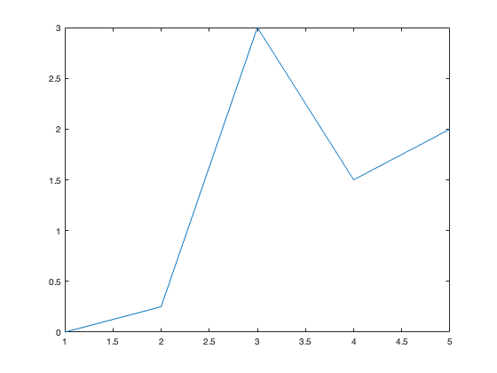

Lab 1: Introduction to MATLAB
Contents
Objective
The objective of this lab is to get you started using the MATLAB computer program. MATLAB is widely used software, and it can be used to solve a variety of numerical problems, from solving equations to plotting graphs, fitting curves to data points, and processing statistical data.
Source
You should be able to open and edit the file that made this html document. From within MATLAB, open Lab1.m (Do not just double-click the file from an Explorer window). You may either type edit Lab1.m at the command line or you can double-click on the filename in the Workspace window. This kind of file is sometimes called an "m-file" or a "script". It is a series of instructions that the computer will follow. Any line that starts with a % is ignored by the program. We use these lines as "comment" lines, to allow us to annotate the code with words so we can easily see what each section does.
During the labs, you will likely need to keep 2 programs running: MATLAB (icon on desktop) and a browser set to the webpage for the lab. For an internet browser, we suggest Chrome, Safari or Firefox over Microsoft Edge. You may also wish to look at the online MATLAB tutorial pages at http://www.mathworks.com/help/matlab/index.html
1: Online tutorials
Mathworks has some great tutorials on getting started with MATLAB. See http://www.mathworks.com/academia/student_center/tutorials/launchpad.html and http://www.mathworks.com/academia/students.html
2. Arithmetic Operations and Functions
At its simplest, we can use MATLAB as a calculator. In the command window, at the command prompt, type
3+2
What do you get?
3+2
ans =
5
Type
3*7
What do you get?
3*7
ans =
21
We can also do more complicated operations, like taking exponents: for "3 squared" type
3^2
3^2
ans =
9
For "two to the fourth power" type
2^4
2^4
ans =
16
"Scientific notation" is expressed with "10^" replaced by "e" - that is, 10^7 is written 1e7 and 2.15x10^-3 is written 2.15e-3. Examples:
1.5e-2
ans =
0.0150
2e-3 * 1000
ans =
2
MATLAB has all of the basic arithmetic operations built in:
+ addition
- subtraction
* multiplication
/ division
^ exponentiation
as well as many more complicated functions (e.g. trigonometric, exponential):
sin(x) sine of x (in radians)
cos(x) cosine of x (in radians)
exp(x) exponential of x
log(x) base e logarithm of x (normally written ln)
The above are just a sample - MATLAB has lots of built-in functions.
You can always get help in MATLAB by typing "help". Type this alone and you'll get a big list of directories you can get more information about - not always too useful. It's more useful to type "help" with some other command that you'd like to know more about. E.g.:
help sin
SIN Sine of argument in radians.
SIN(X) is the sine of the elements of X.
See also ASIN, SIND, SINPI.
Documentation for sin
doc sin
Other uses of sin
tabular/sin
help atan
ATAN Inverse tangent, result in radians.
ATAN(X) is the arctangent of the elements of X.
See also ATAN2, TAN, ATAND, ATAN2D.
Documentation for atan
doc atan
Other uses of atan
tabular/atan
You can get a list of all the built-in functions by typing
help elfun
Elementary math functions.
Trigonometric.
sin - Sine.
sind - Sine of argument in degrees.
sinh - Hyperbolic sine.
asin - Inverse sine.
asind - Inverse sine, result in degrees.
asinh - Inverse hyperbolic sine.
cos - Cosine.
cosd - Cosine of argument in degrees.
cosh - Hyperbolic cosine.
acos - Inverse cosine.
acosd - Inverse cosine, result in degrees.
acosh - Inverse hyperbolic cosine.
tan - Tangent.
tand - Tangent of argument in degrees.
tanh - Hyperbolic tangent.
atan - Inverse tangent.
atand - Inverse tangent, result in degrees.
atan2 - Four quadrant inverse tangent.
atan2d - Four quadrant inverse tangent, result in degrees.
atanh - Inverse hyperbolic tangent.
sec - Secant.
secd - Secant of argument in degrees.
sech - Hyperbolic secant.
asec - Inverse secant.
asecd - Inverse secant, result in degrees.
asech - Inverse hyperbolic secant.
csc - Cosecant.
cscd - Cosecant of argument in degrees.
csch - Hyperbolic cosecant.
acsc - Inverse cosecant.
acscd - Inverse cosecant, result in degrees.
acsch - Inverse hyperbolic cosecant.
cot - Cotangent.
cotd - Cotangent of argument in degrees.
coth - Hyperbolic cotangent.
acot - Inverse cotangent.
acotd - Inverse cotangent, result in degrees.
acoth - Inverse hyperbolic cotangent.
hypot - Square root of sum of squares.
deg2rad - Convert angles from degrees to radians.
rad2deg - Convert angles from radians to degrees.
Exponential.
exp - Exponential.
expm1 - Compute exp(x)-1 accurately.
log - Natural logarithm.
log1p - Compute log(1+x) accurately.
log10 - Common (base 10) logarithm.
log2 - Base 2 logarithm and dissect floating point number.
pow2 - Base 2 power and scale floating point number.
realpow - Power that will error out on complex result.
reallog - Natural logarithm of real number.
realsqrt - Square root of number greater than or equal to zero.
sqrt - Square root.
nthroot - Real n-th root of real numbers.
nextpow2 - Next higher power of 2.
Complex.
abs - Absolute value.
angle - Phase angle.
complex - Construct complex data from real and imaginary parts.
conj - Complex conjugate.
imag - Complex imaginary part.
real - Complex real part.
unwrap - Unwrap phase angle.
isreal - True for real array.
cplxpair - Sort numbers into complex conjugate pairs.
Rounding and remainder.
fix - Round towards zero.
floor - Round towards minus infinity.
ceil - Round towards plus infinity.
round - Round towards nearest integer.
mod - Modulus (signed remainder after division).
rem - Remainder after division.
sign - Signum.
3. Variables In MATLAB
MATLAB can be used like a calculator - but it's much more. It's also a programming language, with all of the basic components of any such language.
The first and most basic of these components is one that we use all the time in math - the variable. Like in math, variables are generally denoted symbolically by individual characters (like "a" or "x") or by strings of characters (like "var1" or "new_value").
Any numerical quantity given a symbolic "name" is a variable. NOTE: Variable names are CASE-SENSITIVE; that is, "myvariable" is a different name than "MyVariable"
How do we assign a value to a variable? Easy - just use the equality sign. For example
a = 3
a =
3
sets the value 3 to the variable a. As another example
b = 2
b =
2
sets the value 2 to the variable b. We can carry out mathematical operations with these variables: e.g.
a+b
ans =
5
a*b
ans =
6
a^b
ans =
9
cos(a)
ans = -0.9900
There are some built in variables; one of the most useful is pi:
pi
ans =
3.1416
We can also assign the output of a function to a new variable: e.g.
b = a*exp(a)
b = 60.2566
b
b = 60.2566
If you just want MATLAB to assign the value of a calculation to a variable without telling you the answer right away, all you have to do is put a semicolon after the calculation:
b = a*exp(a); % note: the semicolon at the end surpressed the output
b
b = 60.2566
Being able to use variables is very convenient, particularly when you're doing a multi-step calculation with the same quantity and want to be able to change the value. For example:
a = 1; b = 3*a; c = a*b^2; d = c*b-a;
d
d =
26
Now say I want to do the same calculation with a = 3; all I need to do is make one change
a = 3; b = 3*a; c = a*b^2; d = c*b-a;
How does this make things any easier? Well, it didn't really here - we still had to type out the equations for b, c, and d all over again. But we'll see that in a stand-alone computer program it's very useful to be able to do this.
In fact, the sequence of operations above is an example of a computer program. Operations are carried out in a particular order, with the results of earlier computations being fed into later ones. You will be writing your own programs in a later section of the tutorial.
It is very important to understand this sequential structure of programming. In a program, things happen in a very particular order: the order you tell them to happen. It's very important to make sure you get this order right. This is pretty straightforward in the above example, but can be much more complicated! (see Lab 5, Flow Control)
Any time a variable is created, it's kept in memory. This can be useful - you can always use the variable again later. It can also make things harder - for example, in a long program you may try giving a variable a name that you've given another one earlier in the program, leading to confusion.
% Let's see what is MATLABs memory by typing
whos
Name Size Bytes Class Attributes a 1x1 8 double ans 1x1 8 double b 1x1 8 double c 1x1 8 double d 1x1 8 double
or, you can look in the Workspace window.
It can therefore be useful sometimes make MATLAB forget about a variable; for this the clear command is used. For example, define
b = 3;
Now if we ask what b is, we'll get back that it's 3
b
b =
3
Using the clear command to remove b from memory
clear b
now if we ask about b
b
??? Undefined function or variable 'b'.
we're told it's not a variable in memory - we've succeeded in getting rid of it. To get rid of everything in memory, just type
clear all
Have a look over in the Workspace corner of your MATLAB window. All the variables we've already created are gone!
4: Matrices / Arrays
An important idea in programming is that of an array (or matrix). This is just an ordered sequence of numbers (known as elements):
x = [1;2;3] A = [1 2 3; 4 5 6; 7 8 0] % Notice that the rows of a matrix are separated by semicolons, while the % entries on a row are separated by spaces (or commas).
x =
1
2
3
A =
1 2 3
4 5 6
7 8 0
M = [1 22 -0.4]
M =
1.0000 22.0000 -0.4000
M = [1, 22, -0.4] is a 3-element array in which the first element is 1, the second element is 22, and the third element is -0.4. These are ordered - in this particular array, these numbers always occur in this sequence - but this doesn't mean that there's any particular structure to the ordering. That is - in an array, numbers don't have to increase or decrease or anything like that. The elements can be in any order - but that order partly defines the array. Also note that the numbers can be integers or rational numbers, or positive or negative.
While the elements of the array can be any kind of number, their positions are identified by integers: there is a first, a second, a third, a fourth, etc. up until the end of the array. It's standard to indicate the position of the array using bracket notation: in the above example, the first element is
M(1) = 1
the second element is
M(2) = 22
and the third element is
M(3) = -0.4.
These integers counting off position in the array are known as "indices" (singular is "index").
All programming languages use arrays, but MATLAB is designed to make them particularly easy to work with (the MAT is for "matrix"). To make the array above in MATLAB all you need to do is type
M = [1 22 -0.4]
M =
1.0000 22.0000 -0.4000
To enter a matrix, just follow a few basic conventions:
- separate the elements of a row with blanks or commas
- use a semicolon, ;, to indicate the end of each row
- Surround the entire list of elements with square brackets, [ ].
- Remember that MATLAB always looks at rows first, then columns.
Then to look at individual elements of the array, just ask for them by index number:
M(1)
ans =
1
M(2)
ans =
22
M(3)
ans = -0.4000
We can also ask for certain ranges of an array, using the "colon" operator. For an array M we can ask for element i through element j by typing
M(i:j)
E.g.:
M(1:2)
ans =
1 22
M(2:3)
ans = 22.0000 -0.4000
If we want all elements of the array, we can type the colon on its own
M(:)
ans =
1.0000
22.0000
-0.4000
We can also use this notation to make arrays with a particular structure. Typing
M = a:b:c
makes an array that starts with first element
M(1)=a
and increases with increment b:
M(2) = a+b, M(3)= a+2b, M(4) = a+3b, etc.
The array stops at the largest value of N for which M(N) <= c.
Example 1:
M = 1:1:3
M =
1 2 3
The array starts with 1, increases by 1, and ends at 3
Example 2:
M = [1 : 0.5 : 3]
M =
1.0000 1.5000 2.0000 2.5000 3.0000
The array starts at 1, increases by 0.5, and ends at 3
Example 3:
M = [1:0.6:3]
M =
1.0000 1.6000 2.2000 2.8000
Here the array starts at 1, increases by 0.6, and ends at 2.8 - because making one more step in the array would make the last element bigger than 3.
Example 4:
M = [3:-0.5:1]
M =
3.0000 2.5000 2.0000 1.5000 1.0000
This kind of array can also be decreasing.
If the increment size b isn't specified, a default value of 1 is used:
M = [1:5]
M =
1 2 3 4 5
That is, the array a:c is the same as the array a:1:c
It is important to note that while the elements of an array can be any kind of number, the indices must be positive integers (1 and bigger). Trying non-positive or fractional integers will result in an error message. (Try it ...)
Each of the elements of an array is a variable on its own, which can be used in a mathematical operation. E.g.:
M(1)+M(3)
ans =
4
M(2)*M(3)
ans =
6
The array itself is also a kind of variable - an array variable. We need to be careful with arithmetic operations (addition, subtraction, multiplication, division, exponentiaion) when it comes to arrays - these things have to be defined correctly. We'll look at this later.
In MATLAB, when most functions are fed an array as an argument they give back an array of the function acting on each element. That is, for the function f and the array M, f(M) is an array such that
f(i) = f(M(i)).
E.g.
a = 0:4 b = exp(a)
a =
0 1 2 3 4
b =
1.0000 2.7183 7.3891 20.0855 54.5982
Let's now try a 2-dimensional array. Type the following command into the command window:
A = [16 3 2 13; 5 10 11 8; 9 6 7 12; 4 15 16 1]
A =
16 3 2 13
5 10 11 8
9 6 7 12
4 15 16 1
MATLAB displays the matrix you just entered. We named this matrix A and it is now stored in the Workspace.
Subscripts The element in row i and column j of A is denoted by A(i,j). For example, A(4,2) is the number in the 4th row and the 2nd column. What is the value at A(4,2)? Type the command at the command prompt.
A(4,2)
ans =
15
What if we want a list of all the elements in the 2nd column? We use the colon, :, to indicate all the row values (in this case).
A(:,2)
ans =
3
10
6
15
When you do not specify an output variable, MATLAB uses the variable ans, short for answer, to store the results of a calculation. ans will get over-written each time you do not specify an output variable.
Let's make a new matrix called X (also known as a vector if it only has one column) that has only the values from the 2nd column of A.
X = A(:,2)
X =
3
10
6
15
Note: another useful tip is to use a semi-colon, ;, to suppress the output of a command. Try it here:
Y = A(:,3);
Notice that the values of Y did not come up on the screen. But - look in the Workspace window off to the left. Y now exists as a variable. Type Y at the command prompt:
5. Arithmetic Operations on Arrays
Arithmetic operations (addition, subtraction, multiplication, division) between an array and a scalar (a single number) are straightforward. If we add an array and a scalar, every element in the array is added to that scalar: the ith element of the sum of the array M and the scalar a is M(i)+a.
M = [1 3 -0.5 7]; M2 = M+1
M2 =
2.0000 4.0000 0.5000 8.0000
Similarly, we can subtract, multiply by, and divide by a scalar.
M3 = 3*M
M3 =
3.0000 9.0000 -1.5000 21.0000
M4 = M/10
M4 =
0.1000 0.3000 -0.0500 0.7000
It's even possible to add, subtract, multiply and divide arrays with other arrays - but we have to be careful doing this. In particular, we can only do these things between arrays of the same size: that is, we can't add a 5-element array to a 10-element array.
If the arrays are the same size, these arithmetic operations are straightforward. For example, the sum of the N-element array a and the N-element array b is an N-element array whose ith element is
a(i)+b(i)
a = [1 2 3]; b = [2 -1 4]; c = a+b; c
c =
3 1 7
That is, addition is element-wise. It's just the same with subtraction.
d = a-b; d
d =
-1 3 -1
With multiplication we use a somewhat different notation. Mathematics defines a special kind of multiplication between arrays - matrix multiplication - which is not what we're doing here. However, it's what MATLAB thinks you're doing if you use the * sign between arrays. To multiply arrays element-wise (like with addition), we need to use the .* notation (note the "." before the "*") (also called the dot-product):
e = a.*b; e
e =
2 -2 12
Similarly, to divide, we don't use /, but rather ./
f = a./b; f
f =
0.5000 -2.0000 0.7500
One way to make a matrix is to just type it in... but that could get boring with large data sets. Another way is to concatenate smaller matrices together.
Z = [X Y] Z = [2*X X]
Z =
3 2
10 11
6 7
15 16
Z =
6 3
20 10
12 6
30 15
6. Creating matrices
There are a few special commands that allow you to quickly make matrices of a particular size:
zeros(m,n) creates an m x n matrix of zeros; ones(m,n) creates an m x n matrix of ones; eye(n) creates the n x n identity matrix; diag(v) (assuming v is an n-vector) creates an n x n diagonal matrix with v on the diagonal.
The commands zeros and ones can be given any number of integer arguments; with k arguments, they each create a k-dimensional array of the indicated size.
Miscellaneous
max(x) returns the largest entry of x, if x is a vector; see help max for the result when x is a k-dimensional array; min(x) analogous to max; abs(x) returns an array of the same size as x whose entries are the magnitudes of the entries of x; size(A) returns a 1 x k vector with the number of rows, columns, etc. of the k-dimensional array A; length(x) returns the ``length'' of the array, i.e. max(size(A)). exit exits Matlab
We can also load data into MATLAB from many formats. We will often use mat files which contain matrices previously generated in MATLAB. You can also import text data using the Import Data wizard. We will start using load next lab, but feel free to investigate all the options today. Don't worry - you can't break MATLAB - try out the various menu options!
7. Simple Graphs
The simplest graphs to create are plots of points in the cartesian plane. For example:
x = [1;2;3;4;5]; y = [0;.25;3;1.5;2]; plot(x,y)
Notice that, by default, Matlab connects the points with straight line segments. An alternative is the following:
plot(x,y,'o')
Next lab we will learn much more about graphing. If you want to work ahead, try to figure out how to label the axes of your graph (commands xlabel and ylabel will be useful here) and how to make your graph in "oceanographic format", with depth increasing downwards on the y-axis. Use the help plot command for more information.
xlabel('name of the x axis') ylabel('name of the y axis')
8. Scripts
A script is simply a collection of Matlab commands in an m-file (a text file whose name ends in the extension .m). Upon typing the name of the file (without the extension), those commands are executed as if they had been entered in the command window one at a time. The m-file must be located in one of the directories in which Matlab automatically looks for m-files; a list of these directories can be obtained by the command path. (See help path to learn how to add a directory to this list.) One of the directories in which Matlab always looks is the current working directory; the command cd identifies the current working directory - you can also look on the top status bar of your MATLAB window.
For example, suppose that plotsin.m contains the lines
x = 0:2*pi/N:2*pi; y = sin(w*x); plot(x,y)
Then the sequence of commands below will produce the following figure:
N=100;w=5; plotsin
Lab 1 Assignment: Practice using Matrices
The following questions are designed to test your comphrension of the tutorials. Create a new script in the Editor window and save it as Lab1CodeYourLastName.m . Cut and paste the following questions into your script. In the space under the question, type in the commands that will produce the answers. You can test your code by "running your script" - which means the computer will do all the commands in the code and hopefully your answers will pop up on the screen! (Click on the green Run arrow at the top of the editor window.)
Q1. Make a row vector x that has the first 10 positive integers.
Q2. Now make x into a column vector using the transpose operator (but don't change its name).
Q3. Add 2 to each element in this vector x and call the resulting vector newx
Q4. Make a column vector y that has every third integer from 1 to 30 (first element in the array is 1).
Q5. Make a matrix, A, whose first column is x, and whose second column is x+2. (Use the x from Q2)
Q6. Make a second matrix B whose first two rows contain the values of A', and whose last two rows contain the values of two times A'. B has a size of (4,10).
Q7. Make a column vector z that is each element of x times the corresponding element of y.
Q8. What is the square of each element of z? Make a new variable zsq containing the answer.
Q9. What is the sine of each element of z? Make a new variable sinz containing the answer.
Q10. What do you type to find the 6th element of z?
Q11. What do you type to find the value that is in the second row and third column of B?
Q12. Make a column vector depth that gives depth values from 0 to 100m in 10m increments.
Q13. Make a column vector temperature that gives temperature values from 0 to 100m in 10m increments. Use the values written on the white board.
Q14. Make a graph that presents temperature vs depth, putting depth on the x axis and temperature on the y axis.
SAVE your script.
NOTE
You will be marked on 1) your answers to the questions; 2) your ability to follow directions; and 3) the elegance of your code. Keep things neat and organized. Use % to make comment lines to explain what you are doing. Use the semicolon ; after commands to supress unnecessary output. Make sure you follow the file name conventions I've asked for.
You need to hand in 1 file to the Lab 1 assignment dropbox on Brightspace:
- Lab1CodeYourlastname.m with your code that answers questions Q1-Q14. I will run your code to generate your answers.
. . . . . . . . .
Last compiled on:
datestr(now)
ans =
'04-Sep-2024 13:54:25'